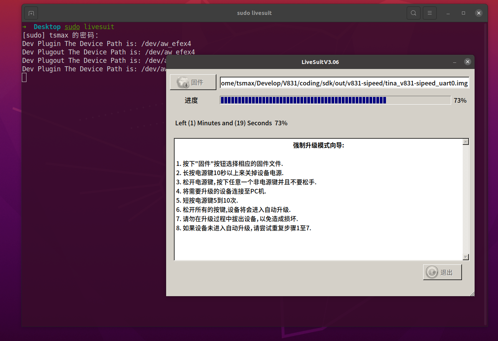

MaixII M2dock 烧录系统
！！！一定要严格按照步骤操作！！！请使用大于 1G 的 TF/SD 卡进行烧录，开源版本要求使用 TF/SD 卡来启动系统。
V831 为全志的 SOC， 所以 Windwos 使用 PhoenixSuit, Linux 上使用 Livesuit 烧录镜像文件。
从下载站获取最新的 V831 系统镜像 SDK_MaixII/release ，找不到就搜索 V831 获取最新的镜像。
解压 V831 镜像压缩包，得到一个 xxxx.img 文件。
从网上获取 PhoenixSuit(Windows) 烧录工具。
Windows 上使用 PhoenixSuit 烧录
解压 PhoenixSuit(Windows) 工具压缩包，不插入 SD 卡，将 V831 USB OTG 接口连接到 PC， 打开设备管理器， 安装驱动文件


打开烧录软件, 并浏览打开镜像文件

重新插拔板子（上电不插入 SD 卡），软件提示是否要清空烧录，提示是否需要升级，点击 YES

插入 sd 卡，提示是否强制格式化，再次点击 YES开始烧录（大约 40S）

可能需要等待几秒才会更新状态，然后等待提示“固件升级成功”，即可断开 USB ，至此固件烧录完毕


Linux(Ubuntu) 使用 Livesuit 烧录
安装烧录工具 Livesuit
每次更新系统 linux kernel 之后需要重新按照软件
- 安装依赖 dkms
sudo apt install dkms
- 安装 libpng1.2（一定要使用这个版本）
wget http://archive.ubuntu.com/ubuntu/pool/main/libp/libpng/libpng_1.2.54.orig.tar.xz
tar xvf libpng_1.2.54.orig.tar.xz
cd libpng-1.2.54
./autogen.sh
./configure
make -j8
sudo make install
更新链接库:
sudo ldconfig
- 安装 livesuit
git clone --recursive https://github.com/QinYUN575/allwinner-livesuit.git
cd allwinner-livesuit
chmod +x livesuit_installer.run
sudo ./livesuit_installer.run
使用 Livesuit 烧录
sudo livesuit 打开烧录工具，并点击“固件”选择镜像文件

不插入 SD 卡，将 V831 USB OTG 接口连接到 PC, 提示是否格式化分区，这时候插入 SD 卡，之后点击 YES

等待烧录完成，提示“固件升级成功”，即可断开 USB ，至此固件烧录完毕


常见问题：
系统烧录步骤严格按照文档要求，先打开软件，拔 SD 卡后插入电脑，等待提示确认后再插入 SD 卡自动完成安装。